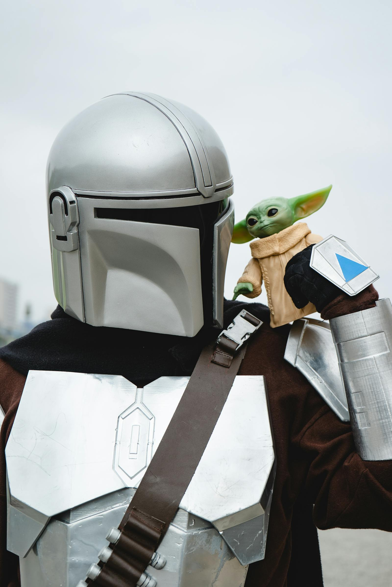
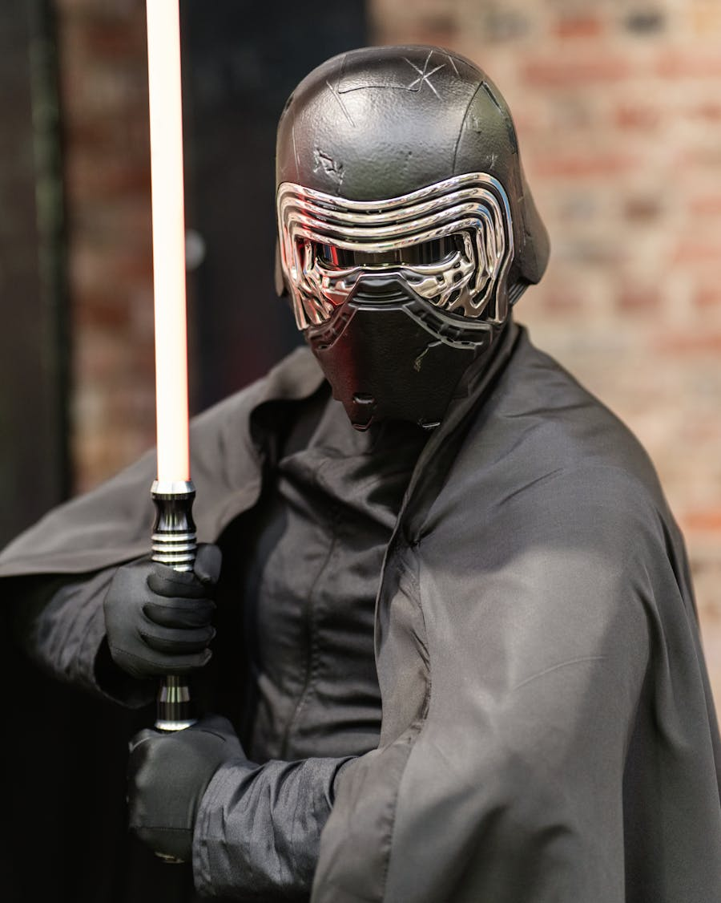
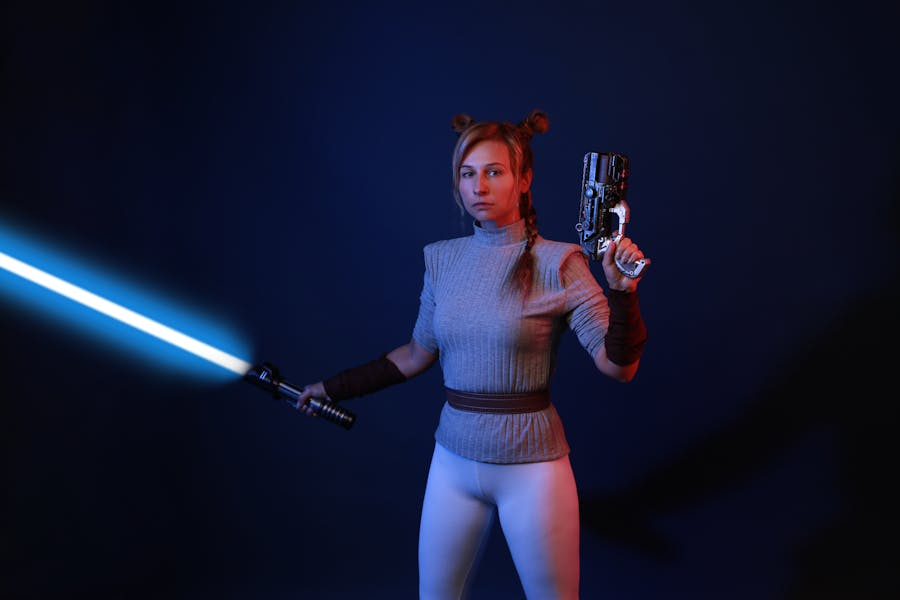

Orga & Tech Check
Erstmal kurz sammeln, alles starten und schauen, dass bei allen Technik und Voice laufen.
08. Mai 2026 | Unser Discord
Kein grosses Event, sondern einfach ein cooler gemeinsamer Abend im Discord: bisschen SWTOR, bisschen Battlefront, ein Kahoot zwischendurch und am Ende ein sauberer Abschluss.

SWTOR, Kahoot, HvV und ein Abend, bei dem einfach alle entspannt zusammen reingehen koennen.
Unser Discord
16:30 Uhr
Voice, Games, Pause und am Ende Gewinner Reveal
Mehr Freundesrunde als offizielles Event
Zeitplan
Erstmal kurz sammeln, alles starten und schauen, dass bei allen Technik und Voice laufen.
Zum Reinkommen erst einmal gemeinsam SWTOR, damit der Abend entspannt startet.
Kleine Pause fuer Essen, kurz runterkommen und nebenbei weiter im Voice quatschen.
Kurze Quizrunde, einfach fuer den Spass und um ein bisschen Chaos reinzubringen.
Eine Stunde HvV mit Hide-and-Seek-Regeln, also genau die richtige Mischung aus Chaos und Spass.
Dann ein Block zum Mods testen und schauen, worauf alle gerade am meisten Lust haben.
Noch eine ordentliche Runde HvV, wenn alle schon richtig drin sind.
Zum Ende noch ein groesserer Match-Block mit GA oder Supremacy, je nachdem worauf wir Bock haben.
Zum Schluss noch kurz Gewinner ansagen und den Abend gemeinsam sauber beenden.
Highlights
Wir bleiben den ganzen Abend im Discord, also kein Hin und Her und kein grosses Drumherum.
Es gibt einen roten Faden, aber die Seite wirkt bewusst nicht wie eine offizielle Veranstaltungsseite.
Mit SWTOR, Kahoot und Battlefront ist genug Abwechslung drin, ohne dass es ueberladen wirkt.
Der Gewinner-Reveal am Ende gibt dem Abend noch einen kleinen gemeinsamen Schlussmoment.


Kurz gesagt
Keine Anmeldung, kein grosses Tamtam. Hauptsache, alle sind rechtzeitig im Discord, haben die Games startklar und koennen direkt mitmachen.
16:30
Discord checken, Voice testen und SWTOR sowie Battlefront am besten vorher schon offen haben.
Ablauf ansehen0:00
Nach GA oder Supremacy gibt es noch kurz den Gewinner-Reveal und dann ist der Abend rund.
Kurzcheck lesen